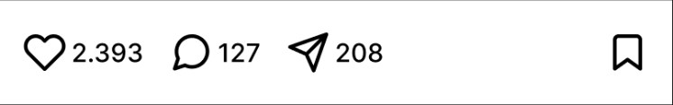
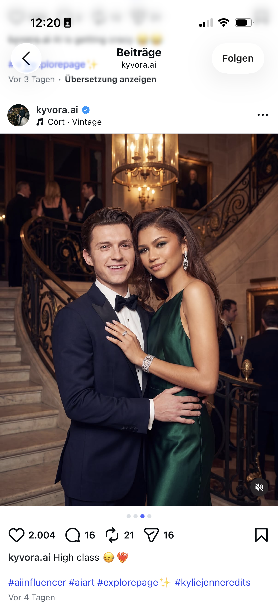

Du scrollst durch perfekte Instagram-Profile – aber die Person existiert nicht. KI-Influencer werden am Computer erschaffen, und nicht alle Accounts machen das deutlich.
Weil sie sich nie krankmelden, nie altern und rund um die Uhr Werbung machen können. Marken und Agenturen steuern jedes Detail – Aussehen, Meinung und Veröffentlichungszeiten.
Unrealistische Körper- und Lifestyle-Bilder wirken besonders stark, wenn nicht erkennbar ist, dass sie künstlich sind. Werbung verschwimmt mit echtem Leben.

Betrüger nutzen die Gesichter von Prominenten oder ahnungslosen Nutzerinnen und Nutzern, um Vertrauen zu wecken. Über gefälschte Profile verbreiten sie etwa Falschmeldungen oder gaukeln Anlegern dubiose Investments vor.
Betroffen sind nicht nur Prominente. Es trifft Mitschülerinnen, Kolleginnen, ehemalige Partnerinnen. Oft aus Rache, oft einfach, weil es möglich ist.
Wem folgst du eigentlich?